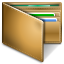

KDE Passwortspeicher
Dieser Artikel wurde für die folgenden Ubuntu-Versionen getestet:
Ubuntu 16.04 Xenial Xerus
Ubuntu 14.04 Trusty Tahr
Zum Verständnis dieses Artikels sind folgende Seiten hilfreich:
 Der KDE Passwortspeicher (in älteren KDE Versionen heißt das Programm "KDE Brieftasche") speichert Passwörter, Formulardaten etc., welche in KDE-Anwendungen eingegeben werden. Der KDE Passwortspeicher ist dabei selbst durch ein Passwort vor unbefugten Zugriffen geschützt.
Der Vorteil dieses digitalen Passwortspeichers ist, dass man sich nur noch ein Passwort merken muss - nämlich das Hauptpasswort des Passwortspeichers - danach können alle die Anwendungen die von ihnen genutzten Passphrasen direkt aus der Tasche herausnehmen, nachdem sie dort (automatisch) eingetragen wurden. Der KDE Passwortspeicher arbeitet mit allen gängigen KDE-Programmen wie KNetworkManager, Konqueror, KDE-Telepathy, Kontact ... zusammen.
So hilft sie dem PC-Benutzer aus dem Passwort-Dilemma: An vielen verschiedenen Stellen - ob auf dem Rechner oder im Internet - muss man aus Sicherheitsgründen Passwörter eingeben und sich vor allem merken. Mit jedem Passwort mehr wird das unbequemer. Der Mensch neigt manchmal dazu, Dinge möglichst einfach zu halten, und nutzt entweder überall sehr simple oder auch untereinander gleiche Passwörter. Dies ist jedoch ein Sicherheitsrisiko. Verwendet man einen Passwort-Speicher, bietet dieser einen verschlüsselten Raum, die Kennwörter abzulegen, und man muss sich nur noch ein einziges merken. Daher können einzelne abgelegte Passwörter auch länger sein (u.a. interessant für WLAN-Schlüssel), der Passwortspeicher macht sie den Anwendungen ja über das Meister-Passwort zugänglich - ein Sicherheits- und Komfortgewinn.
Installation¶
Der KDE Passwortspeicher ist in der Standardinstallation von Kubuntu enthalten, da sie ein integraler Bestandteil des Plasma-Desktops ist. Bei Bedarf kann es mit
kwalletmanager
 mit apturl
mit apturl
Paketliste zum Kopieren:
sudo apt-get install kwalletmanager
sudo aptitude install kwalletmanager
installiert werden [1].
Benutzung¶
Einrichten und Befüllen des KDE Passwortspeichers¶
Unter KDE ist diese standardmäßig aktiviert und wartet im eingerichteten Zustand im Hintergrund darauf, dass eine KDE-Anwendung ein Passwort anfordert.
Gibt man für eine KDE-Anwendung ein Passwort ein, wird dies automatisch im Passwortspeicher gespeichert. Seit Kubuntu 14.04 wird mittels des Pakets pam_kwallet der Passwortspeicher automatisch bei der Installation mit dem Benutzerpasswort angelegt und anschließend bei jedem Login entsperrt. Danach speichern alle KDE-Anwendungen, welche mit dem Speicher kooperieren, in diese - sofern man dies bei der Abfrage nach einer Kennworteingabe nicht abwählt. Daher ist es auch problemlos möglich, dass Anwendung A in die Tasche speichert, B aber nicht, wenn der Nutzer es so will.
Hinweis:
Das Root-Kennwort ist davon natürlich ausgeschlossen, d.h. wenn ein Programm Root-Rechte benötigt oder bestimmte Einstellungen in KDE Systemeinstellungen, so muss das Root-Kennwort jedes Mal eingegeben werden. Denn dieses Passwort kennt ja nur der Administrator, den Passwortspeicher kann aber jeder Benutzer des PCs für sich selbst einrichten, dieser kennt das Passwort dann ja nicht zwangsläufig unbedingt. Außerdem dient diese Einschränkung der allgemeinen Systemsicherheit.
Passwortspeicher öffnen und schließen¶
Hinweis:
Sofern der Benutzer per Autologin angemeldet wird, muss zur Sicherheit der KDE Passwortspeicher weiterhin manuell durch Passworteingabe entsperrt werden. Die automatische Entsperrung mittels pam_kwallet funktioniert dann nicht.
KWallet wird automatisch beim Login des Benutzers gestartet und beim Beenden einer Sitzung wieder geschlossen.
Sofern man manuell während einer Sitzung den Passwortspeicher schließen möchte, sollte man das Symbol im Systemabschnitt der Kontrollleiste aktivieren. Dazu muss unter Systemeinstellungen > Benutzerkontodetails -> KDE-Passwortspeicher die Option "Passwortverwaltung im Systembereich anzeigen" aktiviert werden. Möchte man während der Sitzung den KDE Passwortspeicher manuell schließen, so klickt man nun mit der rechten Maustaste  auf das KDE Brietaschensymbol in der Systemleiste und wählt "Alle digitalen Passwortspeicher schließen" oder tut dies über den KWallet-Manager (siehe unten).
auf das KDE Brietaschensymbol in der Systemleiste und wählt "Alle digitalen Passwortspeicher schließen" oder tut dies über den KWallet-Manager (siehe unten).
Eine geschlossener Passwortspeicher wird mit diesem Icon dargestellt  , eine offener Passwortspeicher mit diesem Icon (je nach Kubuntu-Version und KDE-Variante könnten die Symbole leicht anders aussehen).
, eine offener Passwortspeicher mit diesem Icon (je nach Kubuntu-Version und KDE-Variante könnten die Symbole leicht anders aussehen).
Weitergehende Konfigurierung¶
Zur Konfiguration des Passwortspeichers klickt man entweder mit rechts auf das Symbol in der Systemleiste und wählt "Passwortspeicher einrichten", ruft alternativ das Programm kwalletmanager auf [2] und wählt "Passwortspeicher einrichten" an, oder aber kann in KDE die Konfiguration auch über die KDE Systemeinstellungen geöffnet werden. Dazu wählt man Systemeinstellungen -> Benutzerkontodetails -> KDE Passwortspeicher.
Vollständige Deaktivierung¶
Möchte man den KDE Passwortspeicher generell ausschalten, so entfernt man das Kreuz bei "KDE Passwortspeichersystem aktivieren". Ab dann werden keine Passwörter der KDE-Programme mehr gespeichert.
Automatische Deaktivierung (zeitweise)¶
Soll der Speicher nicht die komplette KDE-Sitzung offen sein, kann man festlegen, dass sie sich unter bestimmten Umständen automatisch schließt:
xy Minuten nach der letzten Nutzung
Wenn der Bildschirmschoner aktiviert ist oder
Wenn keine Anwendung mehr darauf zugreift
Dies ist beispielsweise nützlich, wenn man den PC verlässt und seine Passwörter verschlossen haben möchte, ohne dass man extra die Tasche manuell abschalten muss.
Nutzung mehrerer Passwort-Sammlungen¶
Das Passwortspeicher-Programm bietet die Möglichkeit, mehrere Passwort-Sammlungen zu beinhalten, welche in der Regel unterschiedliche Passwörter nutzen (beispielsweise einen Speicher für diese Passwörter, einen andere für jene).
Dazu ist das "Dienstprogramm für die Passwortverwaltung" zu starten (dann "Datei" -> "Neuer Passwortspeicher...") oder bei "Standardpasswortspeicher" bzw. "Anderen Passwortspeicher" auf "Neu..." zu klicken. Dort kann man auch festlegen, welcher KDE Passwortspeicher standardmäßig verwendet werden soll.
Durch das erwähnte Dienstprogramm kann man mehrere Passwort-Sammlungen auch wirklich verwalten, also neue hinzufügen, alte löschen, Passwörter abändern usw.
Erscheinung im Desktop¶
Der KDE Passwortspeicher kann sich als Icon in der Systemleiste zeigen, dies bietet einen schnellen Zugriff. Man kann einstellen, ob und wann sie dies tun soll.
Einrichtung von expliziten Programmzugriffen¶
Im Reiter "Zugriffsüberwachung" kann man noch konfigurieren, auf welche Weise welches Programm auf den Passwortspeicher zugreifen darf, wobei für eine reibungslose Nutzung die Voreinstellung normalerweise nicht geändert werden muss.
Datensicherung und Nutzung auf verschiedenen PCs¶
Es besteht die Möglichkeit, die vorhandenen Passwortspeicher mitsamt allen ihren Einträgen zu sichern. Dazu ist das Verzeichnis /home/Benutzer/.local/share/kwalletd zu öffnen, die Passwort-Sammlungen liegen dort als Dateien im Format .kwl vor und lassen sich nach Belieben kopieren. Oder aber lässt sich der gewünschte Speicher per Drag&Drop aus dem Fenster des kwalletmanagers, d.h. der Passwortspeicher-Dienstverwaltung, ins Zielverzeichnis bewegen.
Indem man diese Passwortspeicher-Datei (Standard: kwallet.kwl) vervielfältigt, ist auch die Nutzung der selben Passwörter und Einstellungen an mehreren Computern möglich. Beispielsweise durch Übertragen auf einen USB-Stick.
Fehlerbehebung¶
Wenn man die Wallet mit pam entsperren lässt (Siehe Benutzung) und sein Account-Passwort ändert, kann es vorkommen, dass man bei jedem Login vom "Migrationsassistenten für KDE Wallet" aufgefordert wird, sein Passwort einzugeben. Um das Problem zu beheben, prüft man zunächst, ob in der Passwortverwaltung, ob "kdewallet" bereits entsperrt ist. Wenn nicht, muss man hier die Wallet noch einmal mit dem alten Passwort entsperren und das Passwort auf das neue setzen. Danach fügt man folgende Zeilen in die ~/.config/kdewallet hinzu:
[Migration] alreadyMigrated=true
Man sollte nun nicht mehr unnötig nach dem Passwort nach dem Login gefragt werden.


- Erstellt mit Inyoka
-
 2004 – 2017 ubuntuusers.de • Einige Rechte vorbehalten
2004 – 2017 ubuntuusers.de • Einige Rechte vorbehalten
Lizenz • Kontakt • Datenschutz • Impressum • Serverstatus -
Serverhousing gespendet von